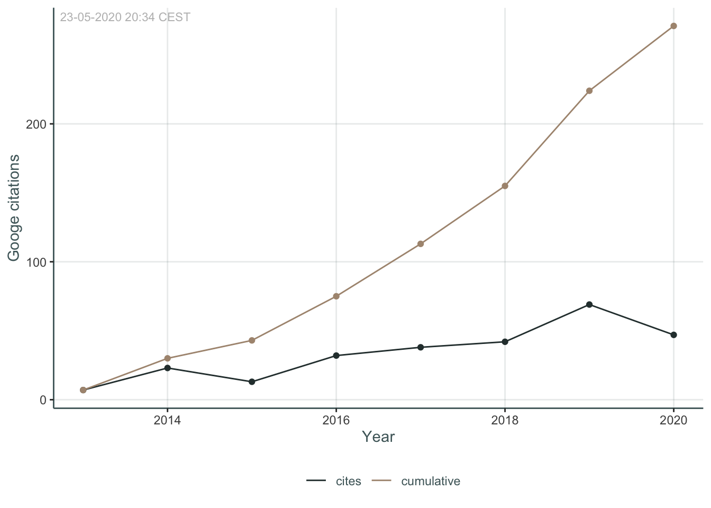

About me

In short
I am a cognitive neuroscientist based in Oslo, Norway, and works at the Center for Lifespan Changes in Brain and Cognition. I’m passionate about cognitive neuroscience, using R and teaching the world the wonders of R. Doing all I can to improve gender diversity and equity in the R-community though RLadies-Oslo.
Education
| Start | End | Place | Degree | Field | Thesis | Grade |
|---|---|---|---|---|---|---|
| 2012 | 2017 | University of Oslo | PhD | Cognitive Neuroscience | Neurocognitive Processes of Decision-making in Adults with ADHD | |
| 2009 | 2011 | University of Oslo | MPhil | Cognitive Neuroscience | Default Mode Resting-State Functional Connectivity of the Aging Brain | B |
| 2005 | 2009 | University of Oslo | BA | Psychology | Attention Deficits in Mild Cognitive Impairment and Dementia of the Alzheimer Type | A |
Work
| Start | End | Place | Position | Responsibilities |
|---|---|---|---|---|
| 2018 | Current | University of Oslo, LCBC | Staff scientist | Data-management in LCBC and the Lifebrain EU-project |
| 2016 | 2018 | University of Oslo, LCBC | Researcher/Project manager | Co-ordinating data collection, data-management, and research collaborations. Running analyses and data preperations |
| 2012 | 2016 | University of Oslo | PhD fellow | Project on decision-making in adults with ADHD and the effects of methylphenidate on this process. |
| 2015 | University of Southampton | Visiting research fellow | Developmental Brain Behaviour Lab under Prof. Edmund Sonuga-Barke. | |
| 2011 | 2012 | Tor Endestad, University of Oslo | Research assistant and lab-technician | Work with functional MRI-analysis, supervising students, and transitioning lab from windows to a linux operating system. |
| 2011 | 2012 | Guido Biele, University of Oslo. | Research assistant | Scripting of experiments, testing of participants and work on application for grants and ethical approval. |
| 2010 | Thomas Espeseth, University of Oslo. | Research assistant | Coordinating data-collection at Oslo University hospital between research assistants, participants, and hospital employees. | |
| 2009 | European Congress of Psychology, Oslo, Norway. | Lecture room assistant | volunteer work. |
Commissions
| Start | End | Place | Commission | Description |
|---|---|---|---|---|
| 2016 | 2017 | University of Oslo | University Ethics work group | Member of group canvasing routines regarding research ethics. |
| 2017 | 2018 | University of Oslo | PhD program work group | Member of group proposing changes to the PhD-program. |
| 2017 | University of Oslo, Faculty of Social Sciences | Faculty Board Member | Elected member. | |
| 2014 | 2015 | University of Oslo, Dept. of Psychology | Department Board Member | Elected member. |
| 2013 | 2015 | University of Oslo, Dept. of Psychology | PsyDoc - Interest organization for PhDs and PostDocs | Co-Founder and elected Chair. |
| 2009 | 2011 | University of Oslo, Dept. of Psychology | Student Council | Representative for Cognitive Neuroscience Master. |
Publications & Citations

AM Fjell, Ø Sørensen, IK Amlien, D Bartrés-Faz, DM Bros, N Buchmann, … (2020) Self-reported sleep relates to hippocampal atrophy across the adult lifespan: results from the Lifebrain consortium Sleep 43 (5), zsz280
VM Danielsen, DV Pineiro, AM Mowinckel, D Sederevicius, AM Fjell, … (2020) Lifespan trajectories of relative corpus callosum thickness: regional differences and cognitive relevance. PsyArXiv __
Ø Sørensen, AM Brandmaier, DM Bros, K Ebmeier, P Ghisletta, RA Kievit, … (2020) Meta-Analysis of Generalized Additive Models in Neuroimaging Studies arXiv preprint arXiv: :2002.02627
A Fjell, O Sorensen, IK Amlien, D Bartrés-Faz, A Brandmaier, D Macia, … (2020) Self-reported sleep problems are related to cortical thinning in aging but not memory decline and amyloid-β accumulation-results from the Lifebrain consortium bioRxiv __
D Vidal-Pineiro, MH Sneve, IK Amlien, HH Grydeland, AM Mowinckel, … (2020) The functional foundations of episodic memory remain stable throughout the lifespan bioRxiv __
D Vidal-Piñeiro, MH Sneve, LH Nyberg, AM Mowinckel, D Sederevicius, … (2019) Maintained frontal activity underlies high memory function over 8 years in aging Cerebral Cortex 29 (7), 3111-3123
AM Fjell, CH Chen, D Sederevicius, MH Sneve, H Grydeland, … (2019) Continuity and discontinuity in human cortical development and change from embryonic stages to old age Cerebral Cortex 29 (9), 3879-3890
AM Mowinckel, D Vidal-Piñeiro (2019) Visualisation of Brain Statistics with R-packages ggseg and ggseg3d arXiv preprint arXiv: :1912.08200
AM Fjell, MH Sneve, D Sederevicius, Ø Sørensen, SK Krogsrud, … (2019) Volumetric and microstructural regional changes of the hippocampus underlying development of recall performance after extended retention intervals Developmental cognitive neuroscience 40, 100723
D Vidal-Pineiro, N Parker, J Shin, L French, AP Jackowski, AM Mowinckel, … (2019) Cellular correlates of cortical thinning throughout the lifespan bioRxiv 585786
KB Walhovd, AM Fjell, Ø Sørensen, AM Mowinckel, CS Reinbold, … (2019) Genetic risk for Alzheimers disease predicts hippocampal volume through the lifespan bioRxiv 711689
AM Fjell, MH Sneve, D Sederevicius, Ø Sørensen, SK Krogsrud, … (2019) Volumetric and microstructural regional changes of the hippocampus underlying development of extended delay long-term memory bioRxiv 595827
KB Walhovd, AM Fjell, R Westerhausen, L Nyberg, KP Ebmeier, … (2018) Healthy minds 0–100 years: Optimising the use of European brain imaging cohorts (“Lifebrain”) European Psychiatry 50, 47-56
D Vidal-Piñeiro, SH Markus, L Nyberg, AM Mowinckel, D Sederevicius, … (2018) TESTING MAINTENANCE AND COMPENSATION NOTIONS IN NORMAL AGING: AGE-RELATED CORRELATES OF ASSOCIATIVE ENCODING SUCCESS Alzheimer’s & Dementia: The Journal of the Alzheimer’s Association 14 (7), P854
AM Mowinckel, D Alnæs, ML Pedersen, S Ziegler, M Fredriksen, … (2017) Increased default-mode variability is related to reduced task-performance and is evident in adults with ADHD NeuroImage: Clinical 16, 369-382
S Ziegler, ML Pedersen, AM Mowinckel, G Biele (2016) Modelling ADHD: A review of ADHD theories through their predictions for computational models of decision-making and reinforcement learning Neuroscience & Biobehavioral Reviews 71, 633-656
AM Mowinckel, ML Pedersen, E Eilertsen, G Biele (2015) A meta-analysis of decision-making and attention in adults with ADHD Journal of attention disorders 19 (5), 355-367
AM Mowinckel, T Espeseth, LT Westlye (2012) Network-specific effects of age and in-scanner subject motion: a resting-state fMRI study of 238 healthy adults Neuroimage 63 (3), 1364-1373